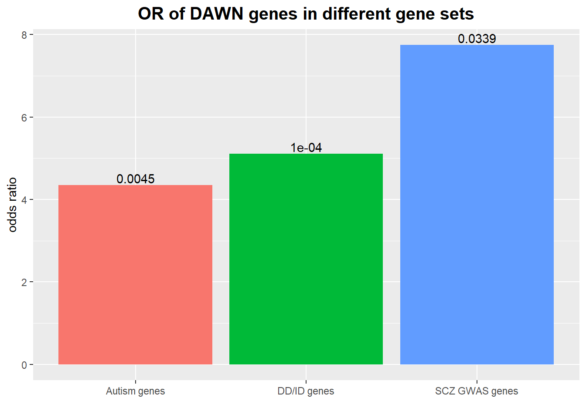

Last updated: 2024-10-15
Checks: 4 3
Knit directory: multi_omics/
This reproducible R Markdown analysis was created with workflowr (version 1.7.1). The Checks tab describes the reproducibility checks that were applied when the results were created. The Past versions tab lists the development history.
The R Markdown file has unstaged changes. To know which version of
the R Markdown file created these results, you’ll want to first commit
it to the Git repo. If you’re still working on the analysis, you can
ignore this warning. When you’re finished, you can run
wflow_publish to commit the R Markdown file and build the
HTML.
Great job! The global environment was empty. Objects defined in the global environment can affect the analysis in your R Markdown file in unknown ways. For reproduciblity it’s best to always run the code in an empty environment.
The command set.seed(20240123) was run prior to running
the code in the R Markdown file. Setting a seed ensures that any results
that rely on randomness, e.g. subsampling or permutations, are
reproducible.
Great job! Recording the operating system, R version, and package versions is critical for reproducibility.
To ensure reproducibility of the results, delete the cache directory
part3_cache and re-run the analysis. To have workflowr
automatically delete the cache directory prior to building the file, set
delete_cache = TRUE when running wflow_build()
or wflow_publish().
Using absolute paths to the files within your workflowr project makes it difficult for you and others to run your code on a different machine. Change the absolute path(s) below to the suggested relative path(s) to make your code more reproducible.
| absolute | relative |
|---|---|
| C:/han/Projects/Multi_Omics/multi_omics/data/gene_pfc35_20240416.RData | data/gene_pfc35_20240416.RData |
| C:/han/Projects/Multi_Omics/multi_omics/data/dat_pfc35_20240328.RData | data/dat_pfc35_20240328.RData |
Great! You are using Git for version control. Tracking code development and connecting the code version to the results is critical for reproducibility.
The results in this page were generated with repository version 446a37d. See the Past versions tab to see a history of the changes made to the R Markdown and HTML files.
Note that you need to be careful to ensure that all relevant files for
the analysis have been committed to Git prior to generating the results
(you can use wflow_publish or
wflow_git_commit). workflowr only checks the R Markdown
file, but you know if there are other scripts or data files that it
depends on. Below is the status of the Git repository when the results
were generated:
Ignored files:
Ignored: .Rhistory
Ignored: analysis/.Rhistory
Ignored: analysis/SCZ_gene_list_cache/
Ignored: analysis/part1_cache/
Ignored: analysis/part2_cache/
Ignored: analysis/part3_cache/
Ignored: analysis/part4_cache/
Ignored: analysis/part5_cache/
Ignored: analysis/part6_cache/
Unstaged changes:
Modified: analysis/part3.Rmd
Note that any generated files, e.g. HTML, png, CSS, etc., are not included in this status report because it is ok for generated content to have uncommitted changes.
These are the previous versions of the repository in which changes were
made to the R Markdown (analysis/part3.Rmd) and HTML
(docs/part3.html) files. If you’ve configured a remote Git
repository (see ?wflow_git_remote), click on the hyperlinks
in the table below to view the files as they were in that past version.
| File | Version | Author | Date | Message |
|---|---|---|---|---|
| html | bcc29e3 | han | 2024-08-21 | 8/21/2024 |
| Rmd | 1e0f797 | han | 2024-06-24 | 6/24/2024 |
| html | 1e0f797 | han | 2024-06-24 | 6/24/2024 |
| Rmd | 346185d | han | 2024-06-24 | 6/24/2024 |
| html | 346185d | han | 2024-06-24 | 6/24/2024 |
| Rmd | 6af4748 | han | 2024-06-24 | 6/24/2024 |
| html | 6af4748 | han | 2024-06-24 | 6/24/2024 |
| Rmd | 08a5959 | han | 2024-06-12 | 6/12/2024 |
| html | 50f9687 | han | 2024-06-10 | 6/10/2024 |
| Rmd | 0ed733a | han | 2024-05-14 | 5/14/2024 |
| html | 0ed733a | han | 2024-05-14 | 5/14/2024 |
| Rmd | 1ab7c4d | han | 2024-05-07 | 5/7/2024 |
| html | 1ab7c4d | han | 2024-05-07 | 5/7/2024 |
| Rmd | 4ab2491 | han | 2024-05-06 | 5/6/2024 |
| html | 4ab2491 | han | 2024-05-06 | 5/6/2024 |
| Rmd | 52ff0c0 | han | 2024-05-06 | 5/6/2024 |
| html | 52ff0c0 | han | 2024-05-06 | 5/6/2024 |
| Rmd | d033990 | han | 2024-05-02 | 5/2/2024 |
| html | d033990 | han | 2024-05-02 | 5/2/2024 |
| Rmd | e2afa26 | han | 2024-04-29 | 4/29/2024 |
| html | e2afa26 | han | 2024-04-29 | 4/29/2024 |
| Rmd | afb290c | han | 2024-04-26 | 4/26/2024 |
| html | afb290c | han | 2024-04-26 | 4/26/2024 |
# enrichment analysis
all_gene=colnames(dat_pfc35)
Autism_gene=ASC_gene
DD_ID_gene=as_tibble(neuro_disorers) %>% filter(Category=="DD/ID genes") %>% dplyr::select(`Gene name`) %>% pull()
SCZ_GWAS_gene=as_tibble(neuro_disorers) %>% filter(Category=="Schizophrenia GWAS genes") %>% dplyr::select(`Gene name`) %>% pull()
SCHEMA_FDR_gene=SCHEMA_gene_results$`Table S5 - Gene Results`[order(SCHEMA_gene_results$`Table S5 - Gene Results`$`P ca/co (comb)`, decreasing = F),]$`Gene Symbol`[1:32]
dawn_new_gene=setdiff(genes_pfc35, SCHEMA_FDR_gene)
gene_set=list(all_gene=all_gene, Autism_gene=Autism_gene, DD_ID_gene=DD_ID_gene, SCZ_GWAS_gene=SCZ_GWAS_gene, SCHEMA_FDR_gene=SCHEMA_FDR_gene, DAWN_gene=genes_pfc35, DAWN_new_gene=dawn_new_gene)
##########################
OR=numeric(); pvalue_dawn=numeric(); pvalue_dawn_new=numeric(); pvalue_schema=numeric()
percentage=matrix(nrow=4, ncol=3)
rownames(percentage)=c("dawn_gene", "all_gene", "schema_fdr", "dawn_new_gene")
colnames(percentage)=names(gene_set)[2:4]
DAWN_overlap_matrix=list()
DAWN_new_overlap_matrix=list()
for (i in 2:4)
{
dawn_matrix=matrix(c(length(intersect(gene_set$DAWN_gene, gene_set[[i]])),
length(intersect(gene_set$all_gene, gene_set[[i]])),
length(gene_set$DAWN_gene),
length(gene_set$all_gene)), nrow=2)
fisher_test=fisher.test(dawn_matrix)
OR[i-1]=fisher_test$estimate; pvalue_dawn[i-1]=fisher_test$p.value;
DAWN_overlap_matrix[[i-1]]=dawn_matrix
dawn_new_matrix=matrix(c(length(intersect(gene_set$DAWN_new_gene, gene_set[[i]])),
length(intersect(gene_set$all_gene, gene_set[[i]])),
length(gene_set$DAWN_new_gene),
length(gene_set$all_gene)), nrow=2)
pvalue_dawn_new[i-1]=fisher.test(dawn_new_matrix)$p.value
DAWN_new_overlap_matrix[[i-1]]=dawn_new_matrix
percentage[1,(i-1)]=length(intersect(gene_set$DAWN_gene, gene_set[[i]]))/length(gene_set$DAWN_gene)
percentage[2,(i-1)]=length(intersect(gene_set$all_gene, gene_set[[i]]))/length(gene_set$all_gene)
percentage[3,(i-1)]=length(intersect(gene_set$SCHEMA_FDR_gene, gene_set[[i]]))/length(gene_set$SCHEMA_FDR_gene)
percentage[4,(i-1)]=length(intersect(gene_set$DAWN_new_gene, gene_set[[i]]))/length(gene_set$DAWN_new_gene)
pvalue_schema[i-1]=fisher.test(matrix(c(length(intersect(gene_set$SCHEMA_FDR_gene, gene_set[[i]])),
length(intersect(gene_set$all_gene, gene_set[[i]])),
length(gene_set$SCHEMA_FDR_gene),
length(gene_set$all_gene)), nrow=2))$p.value
}
percentage_plot=data.frame(prop=c(percentage[2,],percentage[1,], percentage[3,]), genes=rep(c("Autism genes", "DD/ID genes", "SCZ GWAS genes"),3), group=rep(c("all genes", "DAWN genes", "SCHEMA FDR genes"), each=3))
textsize=5
# par(mar=rep(0,4))
topmirage_enrichment=
ggplot(percentage_plot, aes(genes, prop)) +
geom_bar(aes(fill = group), stat = "identity", position = "dodge")+
theme_classic()+
xlab("")+ylab("Proportion of overlapping genes in the gene set")+
theme(axis.text.y = element_text(size = 15))+ # this is for numbers on y axis
ylim(c(0, 0.35))+
theme(plot.title = element_text(hjust = 0.5, size=15, face="bold"))+
ggtitle("Enrichment of DAWN genes with other gene sets")+
theme(legend.title = element_blank())+
geom_signif(annotations ="0.004", y_position = 0.14 ,xmin=0.7, xmax=1, size=1, vjust=-0.5, textsize=textsize)+ # textsize is for text over the bar; size is for width of lines
geom_signif(annotations ="0.020", y_position = 0.18 ,xmin=0.7, xmax=1.3, size=1, vjust=-0.5, textsize=textsize)+ # textsize is for text over the bar; size is for width of lines
geom_signif(annotations ="6e-06", y_position = 0.325 ,xmin=1.7, xmax=2.3, size=1, vjust=-0.5, textsize=textsize)+
geom_signif(annotations ="8e-05", y_position = 0.23 ,xmin=1.7, xmax=2, size=1, vjust=-0.5, textsize=textsize)+
geom_signif(annotations ="0.002", y_position = 0.09 ,xmin=2.7, xmax=3.3, size=1, vjust=-0.5, textsize=textsize)+
geom_signif(annotations ="0.033", y_position = 0.052 ,xmin=2.7, xmax=3.0, size=1, vjust=-0.5, textsize=textsize)+
theme(legend.position="bottom")+
theme(axis.text.x = element_text(angle = 0, vjust = 0.5, size=15))+
theme(text = element_text(size=20))+ # size is for labels on x axis and legend title
theme(axis.title = element_text(size = 13))+ # Font Size of Axis Titles
theme(legend.spacing.x = unit(1.0, 'cm')) # add space between symbols in legend
###################### compute p value
#png("C:\\Users\\hans\\OneDrive - Marquette University\\SCZ-DAWN\\Figures\\Fig-enrichment_of_top_genes.png")
topmirage_enrichment
#dev.off()percentage_plot=data.frame(prop=c(percentage[2,], percentage[1,], percentage[4,]), genes=rep(c("Autism genes", "DD/ID genes", "SCZ GWAS genes"),3), group=rep(c("all genes", "DAWN genes", "DAWN new genes"), each=3))
topmirage_enrichment=
ggplot(percentage_plot, aes(genes, prop)) +
geom_bar(aes(fill = group), stat = "identity", position = "dodge")+
theme_classic()+
xlab("")+ylab("Proportion of genes in the gene set")+
theme(axis.text.y = element_text(size = 13))+ # this is for numbers on y axis
ylim(c(0, 0.35))+
theme(plot.title = element_text(hjust = 0.5, size=15, face="bold"))+
ggtitle("Enrichment of DAWN genes with other gene sets")+
theme(legend.title = element_blank())+
geom_signif(annotations ="0.113", y_position = 0.175 ,xmin=0.7, xmax=1.3, size=1, vjust=-0.5, textsize=5.0)+ # textsize is for text over the bar; size is for width of lines
geom_signif(annotations ="0.004", y_position = 0.135 ,xmin=0.7, xmax=1, size=1, vjust=-0.5, textsize=5.0)+ # textsize is for text over the bar; size is for width of lines
geom_signif(annotations ="8e-05", y_position = 0.225 ,xmin=1.7, xmax=2, size=1, vjust=-0.5, textsize=5.0)+
geom_signif(annotations ="0.541", y_position = 0.26 ,xmin=1.7, xmax=2.3, size=1, vjust=-0.5, textsize=5.0)+
geom_signif(annotations ="0.033", y_position = 0.05 ,xmin=2.7, xmax=3, size=1, vjust=-0.5, textsize=5.0)+
geom_signif(annotations ="1.000", y_position = 0.09 ,xmin=2.7, xmax=3.3, size=1, vjust=-0.5, textsize=5.0)+
theme(legend.position="bottom")+
theme(axis.text.x = element_text(angle = 0, vjust = 0.5, size=15))+
theme(text = element_text(size=15))+ # size is for labels on x axis
theme(axis.title = element_text(size = 15))+ # Font Size of Axis Titles
theme(legend.spacing.x = unit(0.5, 'cm')) # add space between symbols in legend
#png("C:/Users/hans/OneDrive - Marquette University/SCHEMA/Fig-enrichment_of_top_genes.png")
topmirage_enrichment
| Version | Author | Date |
|---|---|---|
| 0ed733a | han | 2024-05-14 |
#dev.off()
########### p values are pvalue_dawn; pvalue_dawn_new##############
##########
rm("BF.PP.gene")
#BF.PP.gene=as_tibble(read.csv("C:\\han\\Dataset\\SCHEMA\\MIRAGE_on_meta_sample_estimate_delta_3vargroups_20231027.csv", header=T))
load("C:\\han\\Dataset\\SCHEMA\\MIRAGE_on_meta_sample_estimate_delta_2vargroups_for_constraint_gene_20231120.RData")
fdr_function=function(fdr_threshold, data)
{
tau=seq(0, 0.999, by=0.001)
num_pred=NULL
false_disc=NULL
FDR=NULL
for (i in 1:length(tau))
{
num_pred[i]=sum(ifelse(data$post_prob>tau[i], 1, 0))
false_disc[i]=sum((1-data$post_prob)*ifelse(data$post_prob>tau[i], 1, 0))
FDR[i]=false_disc[i]/num_pred[i]
}
tau_fdr=tibble(tau=tau, fdr=FDR)%>%drop_na() # drop rows with NA
tau_at_threshold=tau_fdr%>%filter(fdr<=fdr_threshold)
if (nrow(tau_at_threshold)==0)
return("No gene is selected")
if (nrow(tau_at_threshold)>0)
{
tau_threshold=tau_at_threshold$tau[1]
return(data%>% filter(post_prob>tau_threshold))
}
}input_data=BF.PP.gene
colnames(input_data)[3]="post_prob"
FDR_gene=fdr_function(fdr_threshold = 0.05, input_data)intersect(FDR_gene$Gene, genes_pfc35) # overlapping genes between 110 MIRAGE FDR genes and 46 DAWN genes [1] "AKAP11" "TRAPPC10" "ANKRD12" "ZMYM2" "HERC1" "HCN4"
[7] "SP4" "RB1CC1" "SOBP" "STAG1" "GRIA3" "DAGLA"
[13] "SCAF1" "HMGCR" "XPO7" "GRIN2A" "FAM120A" "ZMYND11"
[19] "KDM6B" "CUL1" "TRIO" "FYN" "ASH1L" "CACNA2D1"
[25] "SRRM2" "MAGI2" "CACNA1G" setdiff(intersect(FDR_gene$Gene, genes_pfc35), SCHEMA_FDR_gene) # 18 new DAWN genes overlapping with 110 MIRAGE FDR genes [1] "TRAPPC10" "SOBP" "SCAF1" "HMGCR" "ZMYND11" "FYN" "CACNA2D1"
sessionInfo()R version 4.4.0 (2024-04-24 ucrt)
Platform: x86_64-w64-mingw32/x64
Running under: Windows 10 x64 (build 19045)
Matrix products: default
locale:
[1] LC_COLLATE=English_United States.utf8
[2] LC_CTYPE=English_United States.utf8
[3] LC_MONETARY=English_United States.utf8
[4] LC_NUMERIC=C
[5] LC_TIME=English_United States.utf8
time zone: America/Chicago
tzcode source: internal
attached base packages:
[1] grid stats graphics grDevices utils datasets methods
[8] base
other attached packages:
[1] VennDiagram_1.7.3 futile.logger_1.4.3 ggpubr_0.6.0
[4] gridExtra_2.3 lubridate_1.9.3 forcats_1.0.0
[7] stringr_1.5.1 purrr_1.0.2 readr_2.1.5
[10] tidyr_1.3.1 tibble_3.2.1 ggplot2_3.5.1
[13] tidyverse_2.0.0 dplyr_1.1.4 RSQLite_2.3.6
[16] knitr_1.46
loaded via a namespace (and not attached):
[1] gtable_0.3.5 xfun_0.43 bslib_0.7.0
[4] rstatix_0.7.2 tzdb_0.4.0 vctrs_0.6.5
[7] tools_4.4.0 generics_0.1.3 fansi_1.0.6
[10] highr_0.10 blob_1.2.4 pkgconfig_2.0.3
[13] readxl_1.4.3 lifecycle_1.0.4 farver_2.1.2
[16] compiler_4.4.0 git2r_0.33.0 munsell_0.5.1
[19] carData_3.0-5 httpuv_1.6.15 htmltools_0.5.8.1
[22] sass_0.4.9 yaml_2.3.8 later_1.3.2
[25] pillar_1.9.0 car_3.1-2 jquerylib_0.1.4
[28] whisker_0.4.1 cachem_1.0.8 abind_1.4-5
[31] tidyselect_1.2.1 digest_0.6.35 stringi_1.8.4
[34] labeling_0.4.3 rprojroot_2.0.4 fastmap_1.1.1
[37] colorspace_2.1-0 cli_3.6.2 magrittr_2.0.3
[40] utf8_1.2.4 broom_1.0.5 withr_3.0.0
[43] scales_1.3.0 promises_1.3.0 backports_1.4.1
[46] bit64_4.0.5 timechange_0.3.0 lambda.r_1.2.4
[49] rmarkdown_2.26 bit_4.0.5 cellranger_1.1.0
[52] ggsignif_0.6.4 workflowr_1.7.1 hms_1.1.3
[55] memoise_2.0.1 evaluate_0.23 futile.options_1.0.1
[58] rlang_1.1.3 Rcpp_1.0.12 glue_1.7.0
[61] DBI_1.2.3 formatR_1.14 rstudioapi_0.16.0
[64] jsonlite_1.8.8 R6_2.5.1 fs_1.6.4